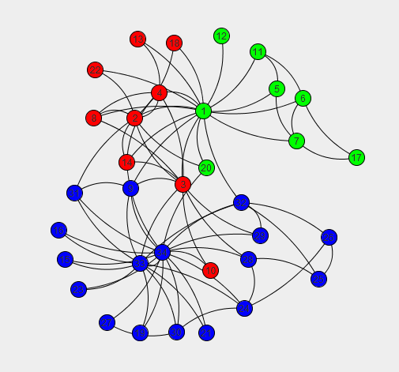
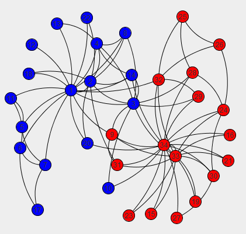

回顾
在上一篇文章中，我们了解了模块度的定义与计算方法。因为Newman快速算法是通过最优化Modularity的值来实现社区划分的，所以先回顾下Modularity的计算方法。我们最后得到的Modularity计算公式为：
$$Q=\sum_i^c(e_{ii}-a_{i}^2)$$其中：
- c表示社区数
- $e_{ij}+e_{ji}$表示连接社区i和社区j边的概率，$e_{ij}=e_{ji}$分别为概率的一半。
- $e_{ii}$表示在社区i内边的概率。
- $a_i=\sum_j{e_{ij}}$表示在端点在社区i中的概率。
如果端点之间随机连接，也就是在随机情况下，社区i内部边的概率为$a_{ii}^2$。
Modularity用来评价社区划分结果的好坏，Q值越大，划分结果越好。如果一个图是随机的，那么它的模块度应该为0。
思想
既然Modularity可以用来评价社区划分结果的好坏，那么是不是可以设计一个算法，直接以Modularity为优化目标，实现社区划分。
这一优化问题的解空间有多大呢？简单计算下，假设有n个节点。
- 如果划分为一个社区，那个只有1个解：所有节点都属于这个社区；
- 如果划分为两个社区，那么每个节点有两种选择：要么属于第一个社区，要么属于第二个社区，总共$2^n$种选择。但划分的结果，即两个社区，是没有顺序的，需要除以2，还得减去把所有节点都分到一个社区的情况，即$2^{n-1}-1$种解。
仅仅这两种情况，解空间就随n呈指数增长，这个问题显然是NP-hard问题。
Newman快速算法是凝聚式的贪心算法。所谓凝聚，就是算法先将各个节点初始化为单个分区，然后逐步将关联度高的分区合并到一起，最后形成大的划分方案。在合并的过程中，每一步选择两个分区合并，使得合并后使Q增长最大（或者减小最小）。
社区i和社区j合并前：
$$\begin{aligned} Q_{before} &=\sum_{k\neq i,j}^c(e_{kk}-a_{k}^2)+(e_{ii}-a_{i}^2)+(e_{jj}-a_{j}^2)\\ &=Q'+(e_{ii}-a_{i}^2)+(e_{jj}-a_{j}^2) \end{aligned}$$合并后，假设合并后为社区z：
$$Q_{after}=Q'+(e_{zz}-a_{z}^2)$$其中：
- $e_{zz}=e_{ii}+e_{jj}+e_{ij}+e_{ji}$，原来在连接社区i和社区j的边现在也属于社区z内部了。
- $a_{z}=a_i+a_j$
那么合并后，Modularity的增量$\Delta Q$：
$$\begin{split} \Delta Q &=Q_{after}-Q_{before}\\ &=e_{ij}+e_{ji}-2a_i a_j\\ &=2(e_{ij}-a_i a_j) \end{split}$$根据$\Delta Q$的计算方式，我们只需要维护一个$e_{ij}$矩阵就可以计算出合并任意两个社区后的Modularity变化量，而不用计算Q。选择使Modularity增量最大的两个社区进行合并。
合并社区i和社区j后，需要更新矩阵，只需要社区i和社区j对应的行相加、对应的列相加即可。
例子
将该算法应用在著名的Zachary空手道俱乐部关系网络中。该俱乐部后来产生分歧，分裂为两个小俱乐部。
- 当Q值达到最大时，为Q=0.381，网络被划分为三个社区，如下图所示：

- 当网络被划分为两个社区时，Q=0.372。与实际情况对比，只有节点10未被划分正确。

代码
|
|